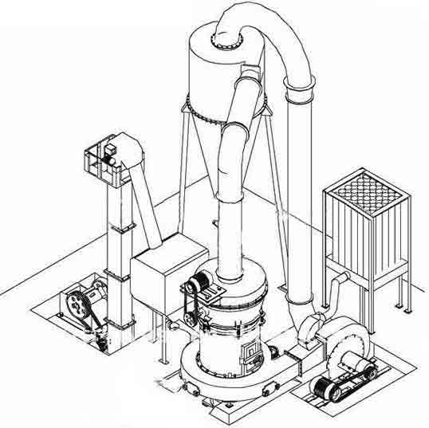

Raymond mill

Raymond mill also known as raymond grinding equipment is commonly used, mainly used for grinding stone, calcite, feldspar, mica, marble, limestone, dolomite, limestone, fluorite, activated carbon, activated clay, kaolin, bentonite, cement, phosphate rock, gypsum, glass, insulation materials with hardness does not exceed 7 degrees, humidity below 6% in the mineral, chemical, construction and other industries. The final size of the finished product can be adjusted in the 60-325 grid.
Introduce of Raymond mill
Raymond Mill is the new type Raymond mill of our company, which is suitable for processing various non-flammable and non-explosive mineral materials with Moh's hardness less than 9.3 and humidity less than 6%. It is widely used in the fields of metallurgy, construction, chemical industry, mining, highway construction etc,. The granularity of the finished powder size can be adjusted between 50 and 325 mesh (315-45 micron). Examples of processing materials include quartz, feldspar, barite, calcite carbonate, limestone, talc, ceramic, iron ore, carborundum, bauxite, rock phosphate, coal and other materials, about 400 kinds of materials in total.
Raymond Mill Working Principle
When the raymond mill works, the materials that need to be crushed are fed into the machine through the feeding hopper. The grinding roll of raymond grinder, raymond grinding mill or raymond pulverizer hangs on the main engine will rotate around the vertical axis and rotates around itself. Due to the centrifugal force produced in the rotating process, the grinding roll will swings outward and tightly press onto the grinding ring to make the relieving tool scoop up the materials and send them to the space between the grinding roll and the grinding ring, and the materials will be crushed due to the rolling and grinding of the grinding roll.
Application Of Raymond Mill
Raymond mill is widely used in ultrafine grinding process of barite, calcite, potassium feldspar, limestone, talc, marble, dolomite and gypsum, etc. It also can do the super fine grinding process of non-flammable and non-explosive ore, chemical and construction materials with Mok's hardness under 9.3 and humidity below 6%. The particle size of the products can be regulated within 40-400. This series of Raymond mill can be divided into high-pressure micro powder grinding mill, strong pressure suspension grinder and general Raymond mill according to the fineness and productivity of finished products.